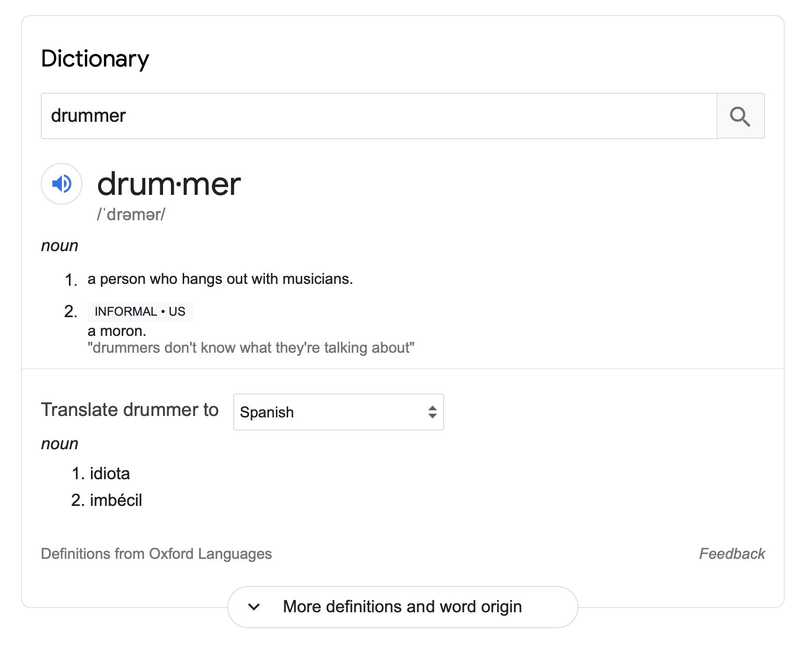

Tagged: Education
Fire Safety for the Home Studio
Posted on March 27, 2022

A fire broke out at the Broncos stadium this past week, and just yesterday a wildfire sparked up and threatened to destroy part of Boulder. And as an unfortunate coincidence, I wanted to talk about fire safety today. So, instead of ruminating about how fires are now a year–round hazard in Colorado (on top of the seasonal hazards of floods, hail, lightning, and tornadoes), let’s talk about how to set up a home studio without burning your place down. Read More . . .
Drums Don’t Play Actual Pitches. And Even if They Could, Why Would You Want Them To?
Posted on February 20, 2022

I’m starting to wonder if drummers are on a misguided quest to try and get their instrument to be taken more seriously. I think the metric modulation nonsense that I often complain about is part of this; other instruments get to talk about advanced harmony, so I get the appeal… but you just end up looking silly to non–drummers.
There’s another topic I want to look at in the same vein: tuning drums to notes. Like many problems in this day and age, the internet is partly to blame. Case in point: my inspiration to write this comes from a Reddit thread that was started this past week. As always, I chimed in on the thread and will expand upon my thoughts here. Read More . . .
Is There Any Difference Between the Triplet and the Sextuplet? And What About the 12–Let?
Posted on February 6, 2022

This is a pretty niche topic, but I wanted to share some thoughts I had on it, and I can imagine that some other musicians might actually be intrigued themselves if they were to consider this question, so just bear with me. Read More . . .
How To Get Started On The Drums
Posted on January 23, 2022

Without a doubt, this is the number one question asked in internet drumming circles. Anyone who asks how to get started on the drums is guaranteed to get at least a few responses, so I’ve never bothered chiming in. I always figured that full–time teachers would be best at responding since they have to routinely get beginners up to speed. But I do have some thoughts to share, and despite my desire to see different topics brought up online, the burden is ultimately on me to come up with stuff to talk about. So let’s go through some pointers. Read More . . .
The Enduring Confusion Around High Sample Rates
Posted on November 28, 2021

Now that I’m the proprietor of a(n admittedly humble) home studio, I like to think that I’ve really come to terms with the nuts and bolts of music technology. But the truth is, I still have a lot to learn, as mastering even a single effect like compression can take some time.
There are other topics that some people think are best left undiscussed. I’ve really gone on a deep dive in the last couple of months trying to make sense of sample rates, particularly the case for using a high sample rate. Read More . . .
Searching for the World’s First Drum Book
Posted on September 19, 2021

When I recently wrote about Advanced Techniques for the Modern Drummer, I mused about how it’s one of the oldest drum set books still in print. After the fact, I began to wonder more and more if it is in fact the first book ever published to contain exercises written out for practice on a drum set. So that led me to today’s question: what was the first drum set book ever written? Read More . . .
“Advanced” Music Theory (For Drummers)
Posted on February 29, 2021
In my Unpopular Opinions post, I brought up my frustration with drummers throwing around “advanced” music theory terms to look cool, without really investigating these terms mean. I said in that post that there was a chance I would write about this in the future, and here we are. I have four topics to discuss: syncopation, polyrhythm, polymeter, and metric modulation. I want to share my understanding of what these terms mean, and I’ll try to address what seems to be the omnipresent confusion regarding them. Read More . . .